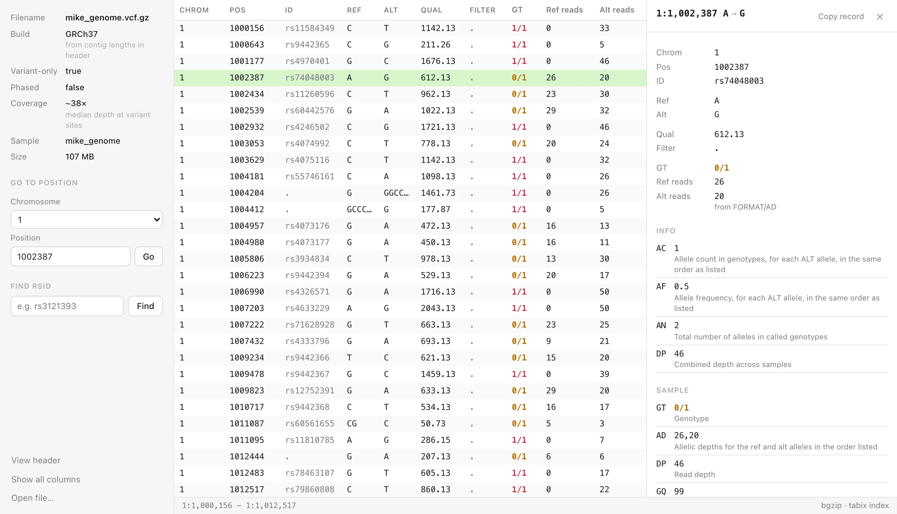
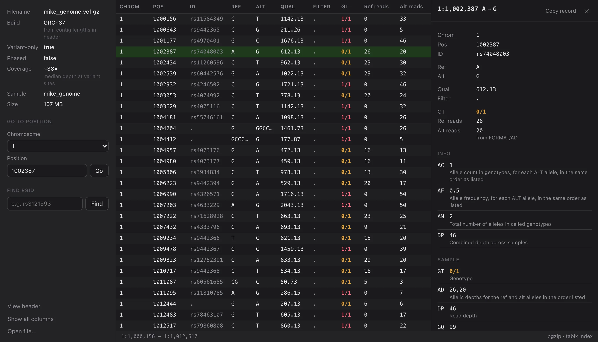

VCF Lite
A small, fast desktop viewer for VCF files.
Download Download a test VCF

Reads .vcf and .vcf.gz, with or without a .tbi or .csi index.
A small, fast desktop viewer for VCF files.
Download Download a test VCF

Reads .vcf and .vcf.gz, with or without a .tbi or .csi index.